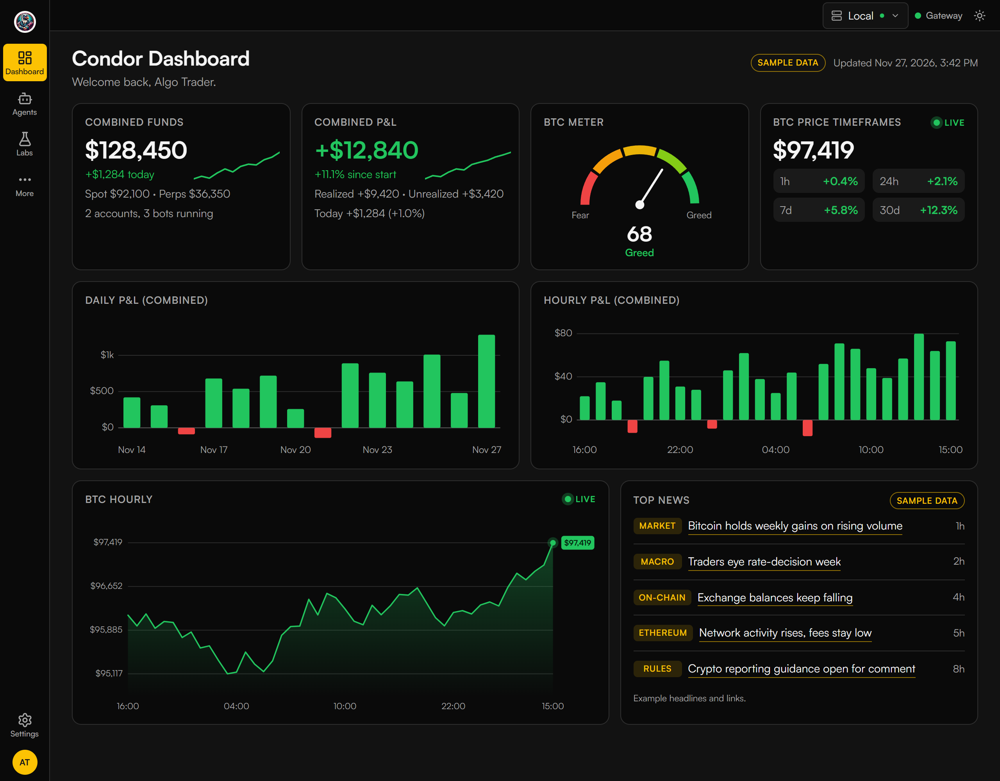

Dashboard as the Default Home Page
Open Condor on a page made for a trader's routine: how the portfolio changed, what the bots are doing, what the market is doing, the top news. Today the home page is a chat with agents. The chat stays, one step further out. The picture below is a mock with sample data, built on the real rail and top bar.
Why
When a trader opens Condor, the home page should answer the question they came with. Today it asks them to start a conversation. The reasons, in order:
- Traders check far more than they ask. What a trader looks at most of the time is how much the portfolio changed, what the bots are doing, what the market is doing, the top news and BTC statistics. The team's estimate is that checking is about 99% of the visits and asking an agent a question about 1%. This is an estimate, not a measurement: Condor has no usage analytics today. Measuring it is an open point below. A dashboard is a tool for monitoring the current state at a glance, with the detail one click away.
- A home page should show the answers at a glance. Dashboard guidance agrees on a few points: put the most important numbers where the eye lands first (top left), show only what the reader needs to monitor, keep it to one screen, and keep detail behind a click. The proposal follows these points.
- A blank chat box is a hard start for beginners. A chat asks the user to know what to type. Research on AI chat finds that many people struggle to put a need into words, and a small study found that people usually added structure to a request only after a poor first answer. Condor's chat home already shows three suggested questions ("How is my portfolio doing?", "What are my bots doing right now?", "Any positions at risk?"). Those are the things a dashboard would simply show.
- The numbers should come to the trader, not wait behind a tab. A beginner may never click Portfolio. That is how the team's trader felt, and still feels, using Condor. A home page built around a summary is a familiar idea: Grafana, for one, lets each user pick their own home dashboard.
- Chat stays, as the second step. The current home is built around agents, which suits developers. A Portfolio, Market and Trader view suits the person trading. Asking an agent is still one click away, and moving rarely needed features to a second screen is a long-standing usability pattern.
Research
Each source below was opened and read for this page. The notes are paraphrased and only say what the page itself says.
| Source | Publisher, year | What it says, and which reason it backs |
|---|---|---|
| Tips for Designing a Great Power BI Dashboard | Microsoft Learn, 2025 (date from the page's own data) | A dashboard is an overview for watching the current state of data at a glance, and the detail sits in the reports behind it. Put the most important numbers top left, make a key figure stand out with a card, keep everything on one screen and remove all but the essential tiles. Backs reasons 1 and 2. |
| From Data To Decisions: UX Strategies For Real-Time Dashboards | Karan Rawal, Smashing Magazine, 2025 | A real-time dashboard is there to help people decide and act quickly. Critical figures go in the upper left, grouped in cards; limit what is visible to about five elements; show small trend lines and change indicators next to key numbers, and fold dense detail away. Backs reason 2. |
| Dashboards | Grafana documentation; year not shown on the page | A dashboard is a set of panels that gives an at-a-glance view of related information. Backs reasons 1 and 2. |
| Organization preferences | Grafana documentation; year not shown on the page | The home dashboard is a setting that can be chosen for the whole server, an organisation, a team or one user, and the user's own choice wins. Shows that a default home page does not lock anyone in. Backs reason 4 and the "let users choose" open point. |
| The Articulation Barrier: Prompt-Driven AI UX Hurts Usability | Jakob Nielsen, personal Substack (not an NN/g article), 2023 | Prompt-based AI asks users for clear writing, which many cannot easily give; the author argues for mixing prompts with buttons and other visible controls. His figure that fewer than one in five people write well enough for advanced use is his own estimate. Backs reason 3. |
| Response Outlining with Generative-AI Chatbots | Tarun Mugunthan, Nielsen Norman Group, 2024 | In a small qualitative study of professionals and students using a chatbot, people usually added structure to their request only after an unsatisfying first answer, which costs effort; some could not name what they needed up front. The page gives no numbers. Backs reason 3. |
| Designing Empty States in Complex Applications: 3 Guidelines | Kate Kaplan, Nielsen Norman Group, 2021 | An empty screen in a new account should say what is going on, explain what the area is for, and give a direct way to start. Backs the empty-state open point. |
| Progressive Disclosure | Jakob Nielsen, Nielsen Norman Group, 2006 | Move advanced or rarely used features to a second screen so the first one shows the most important options. Backs reason 5. |
What this does not show: none of these sources studies a trading app, and the dashboard pages come from business-reporting tools, not from trading. The 99% / 1% split has no source: it is the team's estimate. Pages tried and left out because they did not open or did not say what was needed: Coinbase and Robinhood help pages, a TradingView help page, and Stephen Few's dashboard article. No product's home page is claimed here.
Before
The home page (/) is the Agents page: a chat. A trader who opens Condor sees:
- Left: a "New chat" button, a list of chats with agents, "Start a chat with" more agents, Archived, and an Agent Hub card.
- Middle: "Ask Condor", a model picker, an empty message box, and three suggested questions about the portfolio, the bots and positions at risk.
- Right: a panel for tasks and routines, and a strip of panel icons (Layout, Agent, Portfolio, Bots, Loops, Tasks, Routines).
What is missing for a trader: no balance, no profit or loss, nothing about the market, no news. All of it sits behind other tabs or behind a question typed into the chat.

ui-redesign baseline (1280 by 700 at twice the pixel density, dark theme): the Agents page, which is the home page today. The "Reconnecting" banner comes from the demo server used for the picture, which has no chat connection.After
The home page becomes a dashboard titled "Condor Dashboard". Under the title: "Welcome back, Algo Trader." On the same line as the title, at the right: when the page was last updated. Below, in order: four cards, two profit and loss charts, then a BTC chart with a Top News card.

ui/panel-rail-v2), running on a demo server. Only the page body is a mock, added when the picture was taken. Every number and headline is made up, and the data is deliberately positive. The viewport is 1280 by 1000 at twice the pixel density: the same width as the other pictures, taller so the whole page fits.| Block | What it is meant to show |
|---|---|
| Combined Funds | The total balance across all connected accounts and servers, with today's change. |
| Combined P&L | Total profit or loss across everything, with today's change. |
| BTC Meter | A gauge of market mood from Fear to Greed, in the style of a sentiment index. It is a quick read on the market, not a trading signal. The value 68 in the picture is made up, and where the real value comes from is not decided. |
| BTC Price Timeframes (Live) | The live BTC price and its change over 1 hour, 24 hours, 7 days and 30 days, with a small live indicator. |
| Daily and Hourly P&L (Combined) | Profit and loss per day and per hour, green for gain, red for loss. |
| BTC hourly chart | The BTC price by the hour, so a trader sees the market the bots are trading in. |
| Top News | Five one-line headlines, each a link. The headlines and links in the picture are examples; they point nowhere. |
The mock is kept as one standalone file, assets/dashboard-mock.html (no scripts, no outside resources), so the team and the designer can reuse it.
Notes
- The contents are for the team to fine-tune and decide. The blocks above are a starting list. Suggestions are welcome.
- The layout and design are not final. They will be redesigned by Sofi.
How it connects to the other proposals
- Left icon rail (PRs #3, #4, #6, #7). The Dashboard door already exists on the rail, but today it opens the chat home. This proposal gives that door a page worth opening.
- Navigation Built Around the Trader's Day. Dashboard is door 1 there, "check". This page says what is behind it.
- Guided first-run onboarding. A new user should finish setup on the Dashboard instead of the chat. See the open points for the empty first screen. This page does not change where setup ends today.
Rollout
Not built yet. There is no code PR for this proposal. This page only proposes. If the direction is approved, the work would be:
| Piece | Status |
|---|---|
A Dashboard page, and / opening it instead of the chat home | Not built |
| Data for funds, profit and loss, bots and BTC price | Not built, sources to decide |
| BTC Meter and Top News data | Not built, sources to decide |
| A way into the chat from the Dashboard | Not built, to decide |
| Empty state for a new user, and setup ending on the Dashboard | Not built |
Open points
- Where does chat live? Once the Dashboard is home, the chat needs a place. Options: the Agents door opens the chat workspace; an "Ask Condor" button on the Dashboard; both. Team decision.
- Which blocks are in version 1? A small first version could be Combined Funds, Combined P&L, a bots status block and the P&L charts, with the BTC blocks and news later. Team decision.
- Bots status is not in the picture. Bot status is on the trader's list but is not one of the four cards. The picture only hints at it ("3 bots running"). A Bots card is a suggestion.
- Data sources. The BTC Meter, the news and the market prices need data decisions: where they come from, what they cost, who may use them, and what shows when the source is down. This page does not claim that any of them exists in Condor today.
- Measure the 99% / 1%. The split is the team's estimate. Counting how often the chat and each page are opened for a few weeks would settle it. Nothing is collected today, and adding analytics is a privacy decision of its own.
- Empty state for new users. A new user has no funds and no bots, so every block would be empty. The empty Dashboard should say what is missing, what each block will show, and give one button to start (for example "Connect where you trade"). Sample data labelled as a demo is one option.
- The first screen after onboarding. Setup should end on the Dashboard, not the chat.
- Display currency has no home yet. It left the shell with the side rail. A Dashboard that shows money is a natural place to put it back. Which currency the totals use is also open.
- Let users choose their home page? Grafana does. It could come later, if some users still prefer the chat.
- Not checked yet: the light theme, colour-blind mode (the green and red must still tell apart), phone widths, and the page with real data.
Decision requested
Approve the direction: the Dashboard, not the chat, becomes the default home page, with its contents decided by the team and its design by Sofi. Nothing is built, so no PR is waiting.
Refinement log
Newest first. Add a row for every change that comes out of review.
| Date | Change | Reason / source | PR |
|---|---|---|---|
| 2026-11-27 | First version: five reasons, eight researched sources, the current Agents home as "Before", a mock Dashboard with sample data on the real rail and top bar as "After" (the mock is kept in assets/dashboard-mock.html), notes, open points, and a statement that nothing is built | User request for a proposal on the Dashboard as the default home page. The reference pictures the user mentioned did not arrive, so the layout follows the written list; if they are sent, the picture can be adjusted | #13 |